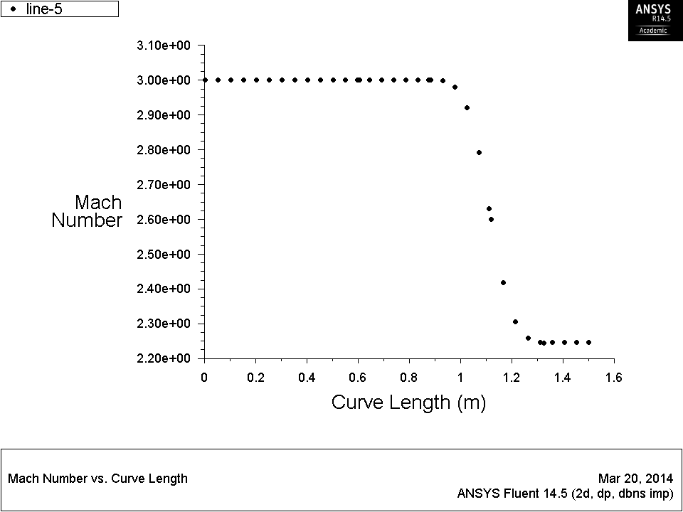

Exercise:
Supersonic Flow over a Wedge¶
Introduction¶
The simulations we have practiced so far are low speed,
incompressible flows. In this lab, however, we will learn some
techniques in modeling high speed flows. Consider a uniform
supersonic stream flowing a wedge with a half-angle of $15^0$:
Geometry¶
- Open ANSYS Workbench, create a FLUENT project, and enter the
Design Modeler.
- Accept $meter$ as length unit.
- Turn on auto constraint on
Cursor.
- Make a sketch on $XY$-Plane with the dimensions shown in the
picture below.
- Then generate a surface sketch based on it.
Next, we will make an auxiliary line to help us with the mesh.
- Create a new sketch by clicking the
New Sketch
button  . .
- Now draw a vertical line from the tip of the wedge to the
top of the geometry. The auto constraint will guide you.
- Go to
Concepts > Lines from Sketches
to generate a line body based on the new sketch.
- Click
Generate after finish.
Finally, we need to project the line on the surface.
- Go to
Tools > Projection.
- Select the line body (by clicking in the graphics window) as
Edges, and then the surface as Target.
- Hit Generate after finishing.
Note that after the projection, you can select two halves of
the surface separately.
- Expand
2 Parts, 2 Bodies.
- Right click
Line Body and select Suppress
Body.
Mesh¶
- Open the Meshing software.
- Apply a
Mapped Face Meshing to the entire
surface.
- Set the
Max Face Size to 0.05 m.
- Generate mesh and create name selections based on the figure
below.
Setup¶
- Launch FLUENT with double precision.
- In the
General task page, choose Density-Based
solver under Type.
This is selected because we are solving a Compressible
flow problem where the density of the high speed flow changes
and the flow can no longer be considered as Incompressible.
- In the
Models task page, open Viscous
and choose Inviscid (to avoid the hazard of
turbulence models).
- Turn on
Energy Equation because we will use Ideal
Gas Law.
- In the
Materials task page, open the property
window of Air.
- Change the
Density to Ideal Gas
and accept the Specific Heat and the Molecular
Weight values.
- In the
Boundary Conditions task page, set the
farfield boundary to pressure-far-field.
- Set the parameters accordingly as shown.
- Since we set the gauge pressure to $1\,\text{atm}$, we need
to set the operating pressure to $0\,\text{atm}$ so that the
total pressure is still $1\,\text{atm}$.
- This can be changed by clicking the
Operating
Conditions button and changing the Operating
Pressure accordingly.
- Accept the default boundary setting for
symmetry
and wedge.
- In the Reference Values task page, choose
Compute
from farfield.
The reference values are used for calculating non-dimensional
results such as drag coefficient.
- In the
Monitors task page, set the convergence
criteria for all terms to $1×10^{-6}$.
- Initialize the solution from the
farfield, and
request 200 iterations.
Post-processing¶
- After the solution converges, go to
Graphics and
Animations.
- Plot the contours of
Mach number (under Velocity
category) and Static Pressure.
Note that FLUENT successfully captured an oblique shock. It was
smeared, however, because FLUENT cannot handle discontinuity.
You can expect a sharper shock by refining the mesh.
- Make an XY-plot of
Mach number along the line
y=0.4 to examine its profile.

It took about 0.2 m (4 elements) for the transition the
transition.
The Mach number in the downstream is 2.422. (NED
10/13/15: Actually, this number and the corresponding
error are wrong.)
NASA
provides an analytical method of calculating oblique shock
wave The analytical solution solves to give the downstream
Mach number as 2.254. The relative error is 7.45%. You can
refine the mesh and see if the solution improves.
|

 This content is available under a Creative
Commons Attribution-NonCommercial 4.0 Unported License.
This content is available under a Creative
Commons Attribution-NonCommercial 4.0 Unported License.